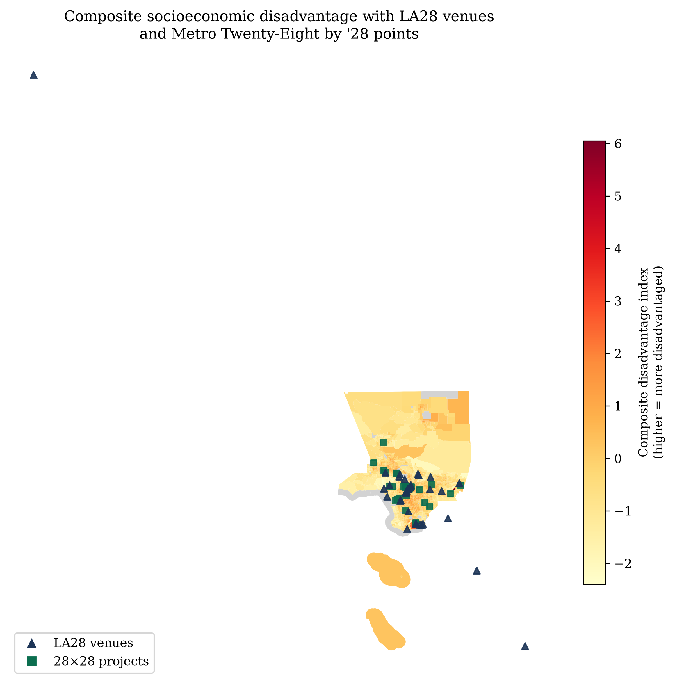
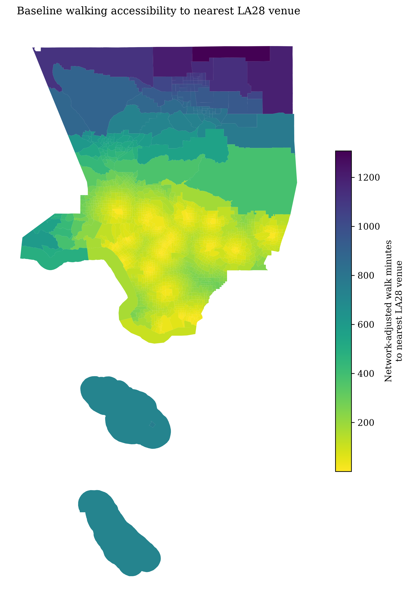
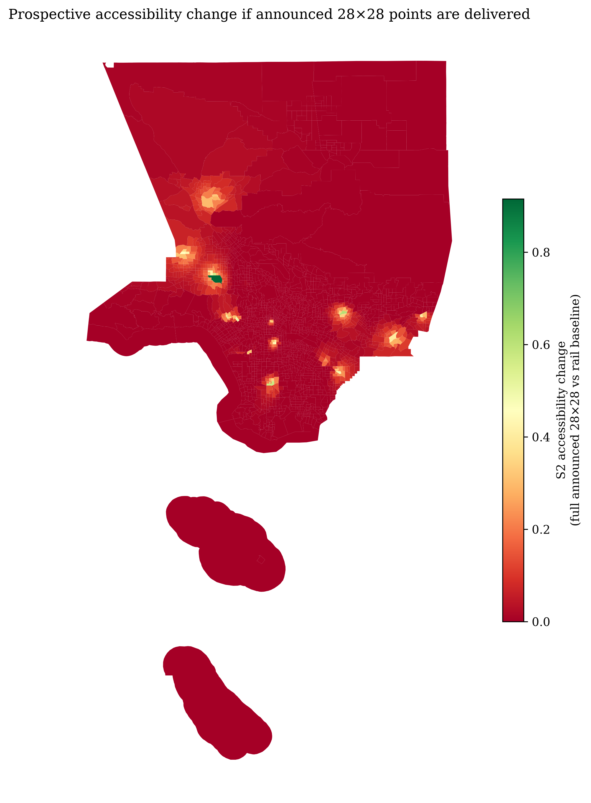
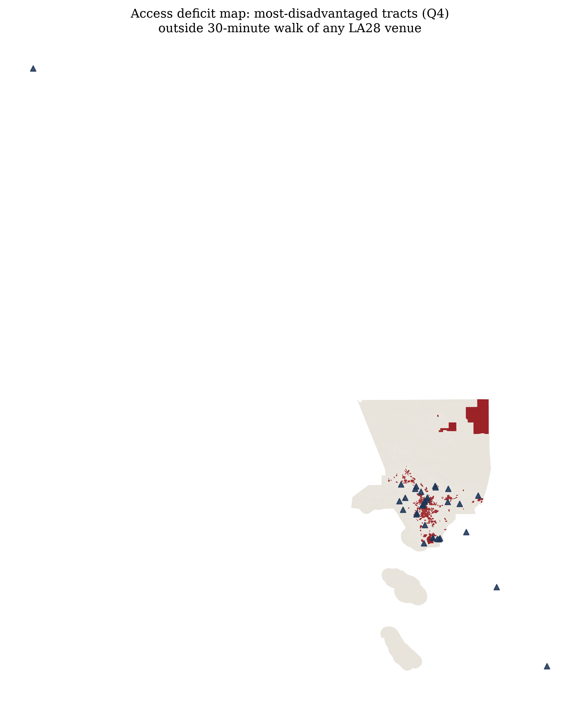
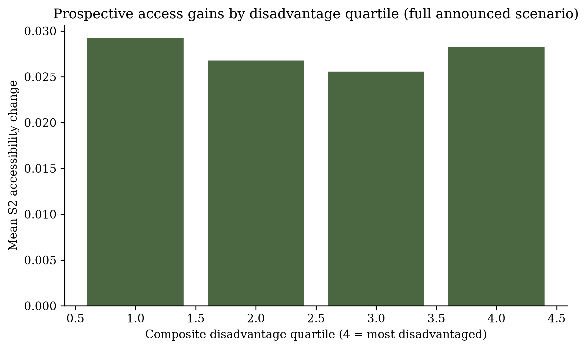
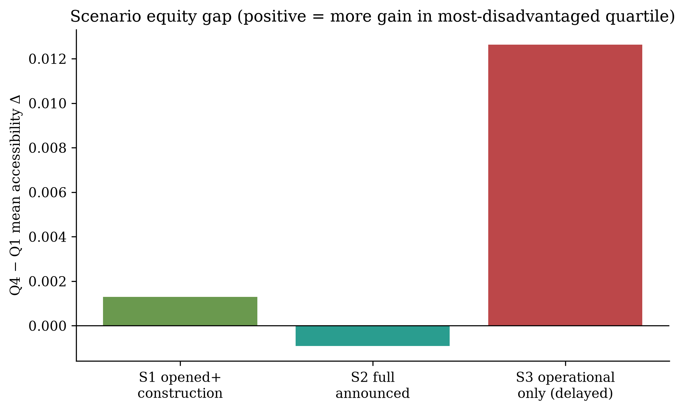

Summary
This project measures the distribution of accessibility to LA28 venues and Metro Twenty-Eight by ’28 investments across a transparent composite disadvantage index (poverty, income, vehicle access, rent burden, overcrowding, CalEnviroScreen). Baseline access uses network-adjusted walking time and a GTFS rail network. Prospective scenarios compare current rail access with announced 2028 project sets. Results are mixed and partly null on prospective gains—reported honestly as research, not advocacy.
Interactive map
Choropleth: composite disadvantage. Markers: venues (dark) and 28×28 points (green).

Key findings
- Higher-disadvantage tracts are often closer (shorter walk) to LA28 venues than the least-disadvantaged quartile—venue geography is not purely an affluent-periphery story.
- Share of tracts with ≤30-minute walk+rail access to venues is higher in the most-disadvantaged quartile than in the least—existing rail already structures access.
- Prospective 28×28 accessibility gains (S2) show only a weak / near-null relationship with disadvantage—announced points do not clearly “tilt” toward the most vulnerable tracts under this proxy model.
- Scenario comparison (S1–S3) and sensitivity tests (thresholds, detour factors, SES measures) are documented in the methodology.





Policy interpretation
- Underserved: Q4 tracts outside 30-minute venue walk access need first/last-mile and community investment focus.
- Equity leverage: Prefer projects that raise access for Q4 in sensitivity runs (BRT/hubs over highway capacity when the metric is neighborhood access).
- Benefits ≠ net welfare: Displacement, construction, and security burdens are recognized even when not fully modeled.
Methodology · Benefits & burdens · Brisbane / Hickman agenda
Why Brisbane 2032 / Hickman next
LA28 Equity Watch shows that descriptive spatial equity analysis is doable—and that near-Games analysis arrives too late to reshape capital programs, while detour-factor walking + rail-only graphs only approximate true multimodal accessibility. Brisbane’s planning-stage window and Hickman’s transport-accessibility methods are the second phase of the same agenda, not a new idea.
Limitations
- Corridor projects as points; walk network uses detour factors unless OSM GraphML is supplied.
- Accessibility is not utilization; announcements may change; displacement not modeled.
- Community listening protocol designed but not yet executed (no fabricated interviews).